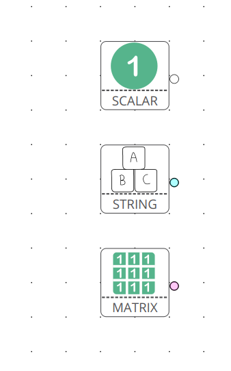

Papyrus User Guide
Table of Contents
- 1. Introduction
- 2. How to install
- 3. How to use
- 3.1. First launch
- 3.2. The main window
- 3.3. Manual
- 3.3.1. Create a new script
- 3.3.2. Open an existing script
- 3.3.3. Save current script
- 3.3.4. Close current script
- 3.3.5. Undo / redo actions
- 3.3.6. Reopen last opened scripts
- 3.3.7. Zooming the scene
- 3.3.8. Antialiasing
- 3.3.9. Display the grid
- 3.3.10. Connect to a running
Kheopsscript - 3.3.11. Launch/pause/resume/stop a script
- 3.3.12. Display a Function’s activity
- 3.3.13. Hiding / showing all outputs
- 3.3.14. Listing shortcuts
- 3.3.15. See the CHANGELOG
- 3.3.16. See the About dialog
- 3.3.17. Creating a Link
- 3.3.18. Inhibition Inputs
- 3.3.19. Swapping Functions
- 3.3.20. Creating comment zones
- 3.3.21. Color code for types
- 3.3.22. Seeing the input names
- 3.3.23. Icon reflects type and matrix size
- 3.3.24. Name conventions
- 3.3.25. Function documentation
- 3.3.26. Error indicators
- 3.3.27. Commenting / uncommenting Functions
- 3.3.28. Copying / Pasting Functions
- 4. Troubleshooting
(An HTML of this README is available here if you prefer)
1 Introduction
Papyrus is Kheops’s GUI program to create, edit and debug neural network to produce Artificial Intelligence robotics behaviors.
Here’s a (non-exhaustive) list of features Papyrus offer:
- It allows you to create complex, neural-network based artificial intelligence robotic behaviors easily.
- It allows you to do so without any programming required: Alexandria is a library of function that we have developed ; in order to create a neural script all that is needed is to drag and drop some functions, and link them together.
- It allows you to interactively launch, pause, stop and restart scripts (which are run with Kheops)
all from the
PapyrusGUI. - It allows you to connect to a running
Kheopsscript and administer it in the same way. - It provides live visualization of any function’s output, right into the GUI: the script is
running with
kheopsat its own rate,papyrusallows you to look at the output values in real time, without the need to stop and relaunchkheops; it’s all done live (which is very convenient as sometimes you notice your robot is doing something funny and if you had to stop-and-restart in order to enable live visualization, the funny behavior would certainly go away!).
2 How to install
The suite (Papyrus, Kheops, Alexandria and Hieroglyph) are based on ROS:
- scripts communicate with one another through ROS topics
- live visualization is achieved by having functions publish their outputs in a ROS topic
- ROS services are used to control scripts from the GUI
Papyrus’s GUI is based on Qt 5.
As an indicator, Papyrus was successfully compiled and run on Ubuntu 18.04, and nixOS (starting
from 18.09, though it needs some adjustments for the ROS packages).
Papyrus and Kheops are fully independent one from each other (and it’s important to keep it that
way) which allows us to have Kheops only installed on robot (especially if those robots have a
non-graphical installation) and Papyrus installed on the diagnostic / development machines.
2.1 Dependencies
In order to build and run Papyrus, you will need those dependencies:
- System:
- ROS:
- Suite (we recommend to put them in the same catkin workspace):
For the system and ROS dependencies, we let the user install the packages using his linux distribution specifics.
Below we explain how to build the dependencies from our suite (namely Papyrus, Alexandria and Hieroglyph).
2.2 Fetching the sources and building
Note: we assume the user has sourced the ROS setup.bash (typically source
/opt/ros/<distro>/setup.bash) before issuing the following commands.
- First we have to create a
catkinworkspace:
$> mkdir -p ~/workspace/catkin_ws/src $> cd ~/workspace/catkin_ws/src $> catkin_init_workspace
This effectively makes =~/workspace/catkinws/` a catkin workspace and this is where we will run
the commands necessary to build (and install if you want) your catkin packages. We made all our
software components (Papyrus, Kheops, Alexandria and Hieroglyph) catkin packages, so you can
add all of them in the same catkin workspace for a smooth and painless compilation.
The above commands should result in a CMakeLists.txt symlink in ~/workspace/catkin_ws/src.
- Then we build the (empty) workspace:
$> cd ~/workspace/catkin_ws $> catkin_make
This should produce two new directories next to src/, which are: build/ and devel/.
- Then we source our catkin worspace-specific
setup.bash:
$> source ~/workspace/catkin_ws/devel/setup.bash
This must be done every time you want to work with Papyrus (the same way you should always
source your global ROS setup.bash). If you tend to open and close a lot of terminals, you might
want to add those two source commands in your ~/.bashrc.
- Then we fetch the sources:
$> cd ~/workspace/catkin_ws/src $> git clone https://github.com/instar-robotics/papyrus.git $> git clone https://github.com/instar-robotics/alexandria.git $> git clone https://github.com/instar-robotics/hieroglyph.git
Make sure you cloned the three repositories in the src/ directory and not at the root of the
catkin workspace (catkin expects projects to be in src/).
- Then we build the whole workspace:
$> cd ~/workspace/catkin_ws/ $> catkin_make
notes:
- make sure you are at the root of the catkin workspace and not in the
src/or any subdirectory: catkin will crash and tell you it cannot find projects.catkincommands are issued at the root of the catkin workspace. - when running
catkin_makealone, it generally try to use all your cores for building, so you might want to adjust with e.g.catkin_make -j2if you want to restrict to two cores. - when running
catkin_makealone, it scans your entire catkin workspace and rebuild all projects inside, that were modified. If you are working on one project (e.g.Papyrus) only, you can speed up and ask catkin to build only this project by passing--pkg <project-name>. So you can usecatkin_make --pkg papyrus. - if you make modifications and you add or remove files (typical example if when you ad a new
class), you need to regenerate the CMake files, for this, pass
--force-cmake, like this:catkin_make --pkg papyrus --force-cmake. But you don’t have to worry about this if you are only usingPapyrusand not modifying it.
2.3 Launching & running
Being a ROS package, you can launch Papyrus from anywhere (you don’t need to be in your catkin
workspace, as long as you sourced your ~/workspace/catkin_ws/devel/setup.bash) with the following
rosrun command:
$> rosrun papyrus papyrus
note: you need to write papyrus twice: the first one is the name of the ROS package, and the
second is the executable to launch from this package. It is possible to have several executables
inside a ROS package.
A good indicator that you have correctly sourced your catkin workspace setup.bash is that typing
rosrus pa and using <TAB> should auto complete it to papyrus, if it doesn’t it generally
means there’s an issue (or you are running an exotic system!).
Alternatively, the executable is store in ~/workspace/catkin_ws/devel/lib/ and is called simply
papyrus. So you can also launch it directly from there.
If everything went well, you should have something like this:
Figure 2: Papyrus home page
Congrats! Papyrus is now build and installed!
3 How to use
Here’s a quick tutorial on how to use Papyrus. We will try to keep this section updated as we
develop new features, but if you are a Papyrus user and you wrote a tutorial,
shoot us an email and we’ll be glad to add a link to your tutorial!
3.1 First launch
Papyrus needs to be given two path to work correctly. The first one is the path to the XML
description files. Basically it needs to know where it should go parse XML files that describes the
Functions to populate the library, Typically you’d give it the path to where Alexandria is.
The second path it needs to have it the location of the C++ library files, that corresponds to the
library Functions, this is where Alexandria was compiled.
Papyrus has two modes builtin: DEBUG and RELEASE. Typically, DEBUG should rather be called
DEV (and it might be renamed later on), and this is intended to work on Alexandria: add new
Functions, change some, delete some, etc. While RELEASE is meant to work with a stable set of
library Functions.
The two path mentioned above must be given to Papyrus in both RELEASE and DEBUG mode, which
means Papyrus can ask you 4 paths. The first time your launch Papyrus, it will ask you to give
it the XML description path for the mode it is currently is (it’s RELEASE by default). And the
first time you try to launch a Kheops script (by clicking the play button in the toolbar), it will
ask you the path for the libraries.
For now, as Papyrus is still quite new, I suggest you switch to the DEBUG mode (by clicking
Options > Development > Debug and then quit Papyrus with CTRL + Q and relaunch it).
When it asks you the description path for the DEBUG mode, you should set it to
~/workspace/catkin_ws/devel/share/alexandria/descriptions and when it asks you the path for the
libraries, you should set it to ~/workspace/catkin_ws/devel/lib/alexandria.
If you messed up, or want to change it, click Options > Developemnt > Edit paths or manually
change the debugLibPath, debugPath, releaseLibPath, releasePath in Papyrus’s config file
located at ~/.config/INSTAR Robotics/Papyrus.conf.
3.2 The main window
Papyrus’s main GUI window is roughly divided into 6 areas, as shown here:
Figure 3: The main window
We’ll describe the features of the areas briefly, before going into more details.
3.2.1 1. The tool bar
This is standard GUI toolbar like you expect. It provides quick access to commonly-used items in the menu above. Starting from the left, you have icons to:
- Create a new script (
CTRL + N) - Open an existing script (
CTRL + O) - Save current script (
CTRL + S) - Zoom in in the scene (
CTRL + +) - Zoom out in the scene (
CTRL + -) - Zoom fit: zoom so that all Functions are within view (useful when you have “lost” a Function)
(
CTRL + =) - Toggle display the grid (
CTRL + SHIFT + G) - Connect to a running
Kheopsscript (CTRL + C) - Play: launch or resume the current script
- This button becomes a Pause button when the current script is running.
- Timer: display the uptime of the current script (feature not yet implemented!)
- Stop: stop the current script; the script will stop running and quit (the linux process will disappear).
- Oscilloscope: display the execution time of all Functions in the script, used to determine which functions take the most time to execute (feature not yet implemented!)
More might come as we ass new feature, make sure to come check this tutorial every now and then to discover new ones.
3.2.2 2. The library panel
This library panel contains the current loaded Functions (in Alexandria). Those are all the
Functions you can add (by drag and dropping them) to the script.
The window is usually bigger, when the property panel (see below) is not big.
The blue entries (“Constants”, “Arithmetic”, “Boolean”, etc.) are categories and they are used to group Functions into logical sections (which are separate library in C++ sense).
Double-click a category to expand/collapse it. Only one category can be expanded at a time (we have several hundreds of functions, so it’s to prevent things to get messy).
Note the Filter... field above: type something in it, and the Functions will be sorted on-the-fly,
allowing you to reach the desired function in a few keystrokes!
To add a Function into the script, simply drag it from this library panel and drop it to the scene (see below).
3.2.3 3. The properties panel
This panel is used to display the properties of the currently-selected object in the scene (see below). It changes dynamically based on what you select.
In the screenshot above, it shows the properties for the Function called MSSum that is in the
scene. The properties panel enables you to see and edits properties for three kinds of objects:
- Functions
- Links
- Scripts
When you modify properties in this panel, changed are applied only when you click the OK button or
you press <ENTER>. If you exit the panel by clicking the scene or another object or if you hit
Cancel or press ESCAPE, the object’s properties will be left untouched and the values in this
panel will be restored to the one the object currently has.
In the above screenshot a Function’s properties are displayed and can be modified:
Title: is a pretty name you can give a Function. It is optional and defaults to an empty value. When a Function has notitle, it is shown as its Function name (here it isMSSum). The Function’snameis always displayed at the very top of the properties panel, in bold. In the scene, a Function’stitlewill be displayed if you gave one, the Function’snameotherwise. A Function’snameis important toPapyrusandKheopsas it corresponds to the real C++ class behind it (this is why you cannot modify it), whereas the Function’stitlehas no meaning forPapyrusandKheops: it is merely for your convenience (and for the convenience of the people who will be reading your script later on). We encourage giving Function’s some meaningful =name=s (like you would give variables or functions meaningful names in a programming language).Type: it is the output type of the Function, you cannot change it. It was determined by the developer who created the Function.Kheopsis strongly typed, so types matter. We have three types:STRINGis the least used and is meant to pass parameters (like a topic name when you want to
publish or subscribe to a topic, etc.).
SCALARis a single floating point value. It is a =Float64= ROS type.MATRIXis a matrix of floating point values. It is aFloat64MultiArrayROS type.
Shape: indicates the requirement of dimensions for aMATRIXFunction, and restrict what you can give as dimensions for a Function. It can take five values:SHAPE_NONE: means there is no restriction: you can set whatever dimensions you want (this is the most common)POINT: means yourMATRIXFunction must be of dimension(1,1). in this case, you cannot modify the dimensions: they are imposed and are both equal to1. This is rare and used only for “casting” values. SinceKheopsis strongly typed, a scalar (SCALAR) cannot be fed into a Function’s parameter which expects a matrix (MATRIX), even when it expect a single-valued matrix (and vice-versa). For this purpose, we created Functions to cast a scalar into a(1,1)matrix (and the opposite, too).VECT: means yourMATRIXFunction must be a vector, i.e. have at least one of its dimension set to1, but we don’t care which one. With aSHAPE_VECTFunction, if you setrowsto a different value that1,colswill be automatically set to1and vice-versa. Note that it is possible to set both to1.ROW_VECT: means yourMATRIXFunction must be a row vector, i.e. itsrowsdimension is fixed and equal to1, and you can only set the number ofcols(not that it can also be set to1).COL_VECT: means yourMATRIXFunction must be a column vector, i.e. itscolsdimension is fixed and equal to1, and you can only set the number ofrows(not that it can also be set to1).
Rows: is the number of rows in yourMATRIX(this doesn’t appear forSCALARFunctions). It is sometimes also called toy-dimension. You can edit it, with the restrictions of theShapefield.Cols: is the number of columns in yourMATRIX(this doesn’t appear forSCALARFunctions). It is sometimes also called tox-dimension. You can edit it, with the restrictions of theShapefield.Save Activity: a Function’s output is also called its activity (we use the terms interchangeably in this tutorial). When checked, it meansKheopswill save this Function’s output/activity at every iteration of the script. This can be an expensive step if your matrix has big dimensions. Activity is saved in a shared memory location. This is meant to be used for Functions which needs to restart from their previous values when/if theKheopsscript crashes (like Functions that performs integration, etc.). If you don’t need this, we recommend not to check this box.Publish output: when this is checked, it means the Function will publish its output/activity et every iterations, in the ROS topic named just below. This is used when you have other scripts (Kheopsscript or other) that need to use (subscribe) to this Function’s output. This is the way severalKheopsscripts can communicate together. note: check this box only to Functions whose output you need to use in production as this value is saved in the script file.PapyrusandKheopsprovide a on-the-fly way to enable live data visualization for a given Function even when this Function does not publish!. The TL;DR is: do not check this box if you only want to debug this Function usingPapyrusas it can do without it.Topic: this is the ROS topic name under which this Function should publish if you checked thePublish outputcheckbox. Three possibilities for this field:- if you did not enter anything, the topic name defaults to
/kheops_<script_name>/function_<uuid>where:<script_name>is the script name<uuid>is the Function’s unique identifier, with hyphens replaced by underscores
- if you enter a name with a leading slash e.g.
/my_topicthis will create this topic exactly as is; you need to make sure you are not going to shadow another topic. - if you enter a name without a leading slash e.g.
my_topicthis will create a topic name within the namespace of the ROS node.
- if you did not enter anything, the topic name defaults to
Display Visualizationis a button you can click to enable live visualization of a Function’s output/activity. You do not need to have thePublish outputenabled for this. Live visualization is a very powerful feature ofPapyrusas it allows you to check the return value of any Function, live, at it runs either on your machine or on a remote robot.
Here’s a demonstration of a live visualization in action:
Figure 4: Demonstration of enabling live visualization for a Function
As you can see, the function does not have Publish output checked. Also notice how the script is
effectively paused, resumed and stopped.
In this screenshot you can see how the properties panel looks when you have clicked on an empty space in the scene, which means you display the properties of the current script.
Figure 5: Properties panel for a script
Here you can see:
Name: this is the name of the script. You can change it by double-clicking on the tab just above the scene.Freq: this shows at which frequency the whole script is run.Kheopsscripts are synchronous which means a wave of execution is propagated through the graph of Functions. Generally we write scripts from left to right (as Function’s inputs are situated on their left, and their output are on their right). The Functions which have no inputs (Constants) begin executing, passing their results to Functions with which they are linked, and so on. When the execution reaches the Functions are the leaves, it stop until it’s start to execute again, based on the frequency.Unit: some people prefer to set a script’s execution frequency while others prefer to set the period, this selector allows you to chose between the two (note that the value is computed for you when you switch from one to another).Crypted: scripts are standard XML files. Thus they can be read easily by a human if need be. By checking this box,Papyruscrypt the file when saving it, so that it’s a binary, encrypted format. Note that this is an experimental feature as is suffers from two problems:- while encrypting,
Papyruswill first save the file to a temporary, plaintext XML file, and then encrypt it (and deleting the plaintext XML file). This is not secure because it’s fairly easy to crawl the temporary files location to quickly get a copy of the script. We should encrypt directly in memory with streams. - As for now, the only way to crypt and decrypt a file is to give
Papyrusa location of akeyandiv. We initially developed this feature to be give people the ability to create a script and encrypt it to be put on a robot so that the logic behind it is not accessible to everyone. But the obvious problem remains where to store the keys. Several options were envisioned such as givingPapyrusthe ability to remote fetch a key from a server, store it in a secure location inside the BIOS, or use a password at launch, etc. This was not a priority in the development hence this feature is frozen for now. We will get back to it at a later time. - As of now,
Kheopsdid not implement the ability to decrypt files, so they are pretty useless for now.
- while encrypting,
In this screenshot you can see how the properties panel looks when you have a Link selected.
Figure 6: Properties panel for a link
A Link stores a matrix of weights between the output of a Function and the Input of another. There are four types of Links (or Inputs for a Function, this is equivalent), they are:
SCALAR_SCALAR: the Link stores a single scalar, and is between a Function that outputs a scalar, and an input of type scalar.SCALAR_MATRIX: the Link stores a single scalar and is between a Function that outputs a matrix and an input of type matrix. The scalar weight in the Link comes as a multiplier for the global matrix.MATRIX_MATRIX: the Links stores a matrix of weights and is between a Function that outputs a matrix and an input of type matrix. If output matrix hasNneurons and the output matrix of the Function whose Link is an input to isM, then the Link hasN*Mneurons in it (this can be a lot). Basically every neurons from the originating matrix has a scalar weight with every neurons of the target Function matrix. And those weight can be modified at each iterations (this is basically how learning functions learn). In such links, the weight you see above the link (which you are asked when you create the Link) is the initial value.STRING_INPUT: this is just to store a string instead of a weight, and if only for special Functions that have string parameters.
The checkbox Secondary is to be checked for Links that loop back to a previous Function. It informs
Kheops that this Link should be ignored on the very fist iteration (otherwise we have a
chicken-egg problem where Functions can’t be triggered because they take for input the output of a
later function). When you create a self-looping Link, i.e. a Link that goes for the output of a
Function back to one of its own input, this checkbox is automatically checked for you, but if you
create a Link to a Function earlier in the graph, then it’s your responsibility to check it (as
Papyrus doesn’t (yet?) traverse the graph to find dependencies (MR are appreciated btw!)).
When the Link is of type MATRIX_MATRIX (and only in this case), you can set the neighborhood of
neurons. It means you can define how each neurons from the incoming Function will be connected to
each neurons in the target Function. There are three possibilities:
One to one: in which case all neurons from the originating matrix are mapped to their corresponding neuron in the target matrix (and only this neuron)One to all: in which case all neurons from the originating matrix are mapped to all neurons in the target matrixOne to neighbors: in which case you are free to define the mapping rule. As of now,Kheopssupport a simple regex-like pseudo language to define the mapping. The definition of those regex can be found in theKheopsdocumentation. There are plans to support a better GUI tool withinPapyrusinstead of manually entering the regexes, but in the meantime, you need to write them by hand, one regex per line in theConnectivity regexestext field.
3.2.4 4. The scene
The scene is the main Papyrus area. It corresponds to the script you are writing. This is where
you drop Functions that were dragged from the library panel, and interconnect them with Links.
You can move a Function (or a group of Functions) by selecting them and dragging them across the scene with your mouse.
You can delete a Function of a Link by selecting it and hitting your <DELETE> key.
Papyrus supports undo / redo (bound to CTRL + Z / CTRL + Y) for all major actions (adding a
Function to the scene, deleting a Function from the scene, changing a Function’s properties, same
with Links, etc.).
Everything draw in the scene is vectorial, which means you can zoom in and out the scene as you wish
(either from the View menu, the toolbar buttons or CTRL + mouse wheel).
You’ve got scroll bars to scroll the scene horizontally and vertically. Alternatively, using your
mouse wheel will scroll the scene vertically and ALT + mouse wheel will scroll the scene
horizontally.
At any time you can hit CTRL + = (or click Zoom fit from the toolbar) to re-center and re-zoom
the scene to contain all elements (this is useful when you get lost in a scroll or zoom).
3.2.5 5. The status bar
The bottom left corner of the window is the status bar (currently empty in the main window, but you can see some message in the first picture or even see it in action in the live demo).
This status bar is used to display messages when something happens in Papyrus. You’ve got three
kinds of messages:
- Info messages, which are displayed in black confirms an action or an event you might be interested in.
- Warning messages, which are displayed in orange explain that some part of the action you’ve just tried to perform failed, but it’s non fatal, and you can still continue to work.
- Error messages, which are displayed in red explain that something you did triggered an error and your action is not possible.
3.2.6 6. The ROS-master indicator
This ROS icon is just here as a convenience to tell you the current status of the ROS master. It’s
green when the ROS master is detected up and running, and turns red when the ROS master goes down.
Papyrus still works when the ROS master is down, but it’s an indicator that you won’t be able to
launch/pause a script, or even connect to one, let alone live visualize some Functions, since the
ROS master is not running, those are either not running either, or not reachable.
3.3 Manual
3.3.1 Create a new script
You can create a new script by clicking File > New Script, or clicking the New Script icon or
better, by hitting CTRL + N.
You are then greeted with a small modal window asking you the name of the new script, which will
also be its default filename. Chose your name wisely because whatever you put there will become part
of the topic names (e.g. if you set foo, then your ROS topics and services will be in the form
/kheops_foo/xxx).
You can cancel the creation of a new script by clicking Cancel or hitting <ESCAPE>.
3.3.2 Open an existing script
You can open a script by clicking File > Open Script, clicking on the Open Script icon. You’ve
got a file selector which allows you to select .xml files. The new opened script will be added as
a new tab in the scene.
3.3.3 Save current script
You can save the current script by clicking File > Save Script, by clicking the Save Script icon
or better, hit CTRL + S. The first time you save a script, it will ask you the location in which
you want to save the script and it will pre-fill the file name, based on the Script name you defined
at the creation.
Script that were modified by not saved have a little star next to their name in the tabs.
3.3.4 Close current script
You can close the current script by clicking File > Close Script or better, by hitting CTRL + W.
If the file was modified, it will first ask you if you want to save it.
3.3.5 Undo / redo actions
you can undo or redo last actions by clicking Edit > Undo / Redo or better, hit CTRL + Z,
CTRL + Y.
3.3.6 Reopen last opened scripts
If you want Papyrus to remember which scripts were opened when you closed it, you need to check
the option in Options > Reopen last scripts.
3.3.7 Zooming the scene
You can zoom in, out or zoom fit the scene in the menu View > Zoom in/out/fit, or clicking the
corresponding icons on the tool bar, or better, by hitting CTRL + +, CTRL + - or CTRL + =.
3.3.8 Antialiasing
You can toggle antialiasing in the menu View > Antialiasing or better, by hitting CTRL + SHIFT +
A.
3.3.9 Display the grid
You can toggle the display of the grid (the little dots on the scene) in the menu View > Display
Grid, by clicking the corresponding toolbar button or better, hit CTRL + SHIFT + G. Note that the
grid always exists (and Functions will be snapped to the grid), it’s just a matter of whether you
want to see it or not.
3.3.10 Connect to a running Kheops script
You can connect Papyrus to a running Kheops script by clicking on Kheops > Connect, the
Connect to Kheops toolbar button or better, hit CTRL + C. It will present you with a list of
detected running Kheops scripts (make sure your ROS URL is correct), click on the one you want and
it will connect.
For now, if you connect to a script that is running locally (on your machine), Papyrus will
automatically open the script file, so you can start debugging Functions live! (The remote version
is coming).
3.3.11 Launch/pause/resume/stop a script
Whether you have connected to a script or if you are creating a script, you can launch it, pause it,
resume it or stop it with the Kheops > Run/Pause/Stop menu or the corresponding toolbar icons.
Note that the lifecycle of the script is independent of Papyrus:
- you can start a script with
Papyrusand exitPapyrus, the script will still be running - you can connect to an already running script, and pause it / quit it from
Papyrus - if you are connected to a running script or if you have launched the script (from
Papyrusor not), you can pause/resume/stop the script with the command lines (through the associated ROS service calls) andPapyruswill automatically reflect the new status in its interface.
Th idea is that you can administer your ROS nodes by the command line, or via Papyrus, and both at
the same time without an issue.
3.3.12 Display a Function’s activity
You can display a Function’s activity (remember “activity” and “output” are the same thing) by
clicking on a Function in the scene, and clicking Display Visualization from the properties panel.
This will create a small graph window in which the activity of the Function is displayed.
You can enable the visualization before launching the node, or while the node is running, as you wish: this works transparently!
You can move the activity visualizer window by drag and drop-ing it. You can change its size by approaching your cursor to either the right edge, the bottom edge or the bottom right corner; the cursor will change change, and at this point it’s just a matter of clicking and dragging, this is quite intuitive and standard.
You can close a Function’s activity visualizer by selecting it (clicking on it) and hitting
<ESCAPE> or <DEL>.
3.3.13 Hiding / showing all outputs
If you want to quickly hide (not close) all visible Activity visualizers, you can click Kheops >
Hide outputs, or better hit CTRL + H. The widgets won’t be computed anymore which makes you save
performances.
You can show them back with Kheops -> Show outputs or hit CTRL + SHIFT + H.
3.3.14 Listing shortcuts
You can have a list of shortcuts and a quick cheat sheet by clicking Help > List shortcuts.
3.3.15 See the CHANGELOG
You can see the CHANGELOG for the different versions of Papyrus by clicking Help > CHANGELOG.
This lists all Papyrus- version, with the newest (the one you are running) at the top. Bug fixes
are listed, and new features are explicitly noted.
Note that the first time you open Papyrus after upgrading to a newer version this CHANGELOG
window will automatically appear once. Press <ESCAPE> to close it.
A Papyrus version corresponds to a git tag on the repository. A crawler automatically
periodically pings the repository for a new version. When it finds one, a pop-up will alert you that
a new Papyrus version has been released and that you can update.
This pop-up will only appear once, and Papyrus will never self-upgrade: you need to checkout the
sources yourself, build them (install Papyrus if you want) and re-launch for the upgrade to take
effect.
3.3.16 See the About dialog
You can show the About dialog in Help > About Papyrus or hit CTRL + ?.
3.3.17 Creating a Link
In order to connect the output of a Function to the input of another, you need to create a Link. To create a Link, simply click on the Output slot of a box and drag until you reach the desired Input slot of another box.
Papyrus will prevent you from creating invalid Links (remember that Kheops is strongly typed).
When you start making a Link, all input slots names will be displayed so you know which input you
need to reach. When you reach a valid input slot, the Link will turn green, indicating you that the
Link you are creating is valid and turn red if it is invalid.
Additionally, input slots which can receive your Link will slightly grow and turn green as you approach then, while invalid input slots for this Link will stay grayed out.
You can see the creation of a Link in action below. You can see that I first start to create an
invalid Link (twice): the Link turns red and when I release my mouse, the link is not created. This
is because I’m trying to link a MATRIX type Function to a SCALAR type input.
When I create a Link from the SCALAR constant Function, there it works. Immediately after
releasing the mouse, a small pop-up asks you for the weight you want to assign this Link. You can
change it later by selecting the Link and editing its Link in the properties panel.
Figure 7: Demonstration of the creating of a Link
3.3.18 Inhibition Inputs
All Functions have an additional input, which is not described in its XML description file: the
inhibition input. It’s called inhib and is of type SCALAR.
This input slot is situated near the output slot, and is almost invisible most of the time. It only becomes visible when you are creating a new Link, and while you are dragging the Link, you need to come close to it (remember: it’s located near the output slot). When you have Links connected to this inhibition input, it also becomes permanently visible.
The goal of this input is, as its name implies, to inhibit the activity of this Function. When no
Link are present on inhib, or if the value is 0, then the activity of the Function is unchanged.
But when the Link on inhib takes values between 0 and 1, the activity is linearly inhibited
correspondingly (i.e. multiplied by 1 - inhib). So the closer you are to a value of 1, the
closer the activity of this Function falls to 0. This setup is there to mimic neural inhibition
where some Function can decrease the value of another when it fires.
For almost all purposes, you can see this inhib entry as a standard multiplication with SMul by
the value (only it’s 1 - inhib). With one difference: when inhib reaches 1.0, the inhibited
Function actually stops publishing its activity on the ROS bus (contrary to a simple SMul).
You can see the inhib input in the video below.
Figure 8: The inhib input slot is situated near the output slot and is mostly invisible expected when approached
3.3.19 Swapping Functions
Sometimes when you are in the process of creating a script you want to test some new Functions in place of another. For hits purpose, we implemented “Function swapping”: this is where you drag a Function from the library panel, but instead of dropping it on an empty space in the scene, you drop in on top of another Function.
When you do this, the Function on the scene will turn purple to indicate that if you drop here, it will be swapped out. When you swap out Functions, several things happen:
- the initial Function (the one that was already present on the scene) is removed
- the new Function (the one you are dragging and just dropped) takes its place on the scene
- every inputs whose names are common between the two Functions will keep their Links
- if there were Links to input of the initial Function and if the new Function doesn’t have an input with the same name, then these Link will be deleted
- the newly-dropped Function will keep the same UUID. This is important as the UUID is each
object’s unique identifier, this is how
Kheopsidentify Links, Functions, inputs, etc. and how it internally maps Links. The fact that the newly dropped Function keeps the same UUID means you are making minor modifications to your graph. - the newly-dropped Function will keep the same properties of the Function it replaced, namely:
- the same topic name: so it will publish on the same topic, and if you had scripts of command lines that were listening to it, you don’t have to change anything
- the same dimensions (if they are both
MATRIXFunctions) - the same checked states for
Publish outputandSave activity - the same
Title, etc.
You can see the Function swap in action below. I start with a SSum Function which is a simply
addition of scalars. I am giving it a Title, I check the Save activity property and I show you
its topic name (which is based on its UUID since I did not enter anything specific).
Then I search for the SMul Function which is a simply multiplication of scalar (by the way you can
see how filtering for Functions in the library panel works), then I drag the SMul Function on the
scene. When I hover the SSum Function, it turns purple and when I drop it on it, I’ve got a
confirmation pop-up asking me if I’m sure.
When I confirm, you can see in the properties panel that indeed, the new Function has become SMul,
it kept the same Title, the same Save activity checked and the same topic.
Figure 9: Demonstration of the Function swap feature
This is useful to try out different Functions without the hassle of recreating Links and not loosing your graph’s integrity.
3.3.20 Creating comment zones
When your scripts become to have a good number of Functions and a Links, it might become a bit
difficult to remember what does what. In order to do this, you have the ability to create Comment
Zones or (Zones) by using your right mouse button and dragging a rectangle.
This create a sort of container in which you can put Functions. They have no meaning for Kheops
and won’t change anything in the way the script is executed, this is a Papyrus feature only and is
intended to organize your code into groups of interest. You can also give a Title to a Zone,
which can act as a small comment.
When you move a Zone, it moves all Functions inside with it. When you delete a Zone though, it
will only delete the Zone, not the Functions inside.
You can see the creation of a Zone and how to add a small comment and change its color below. As
you can see: once a Function is inside the Zone, it moves with it, but if you get it out, it is free
again.
Use Zones with colors to group your scripts in sensible, logical, meaningful sections.
Figure 10: Demonstration of the creation of basic features of a Zone
3.3.21 Color code for types
To help you quickly identify which slots can be linked together, there is a basic color coding for the type of slots (both inputs and output). As you can see in this picture :
SCALARtypes are whiteSTRINGtypes are cyanMATRIXtype are pink

Figure 11: Illustration of the three colors for the three types
Additionally, MATRIX Functions also have their background pink and =SCALAR+ Functions have their
background white in the library panel.
3.3.22 Seeing the input names
the moment you start creating a Link from a Function in the scene, all input slots’s name will appear for the Functions on the scene, which helps you select the right one. When you finish the creation of you Link, the slots’ name will disappear.
Some people prefer to see the slots name at all times, it is possible to have them displayed by
pressing <T> on the scene.
You can see it in action below. When I press <T> the names appear and stay on, when I press <T>
again they disappear.
Figure 12: Input slots names can be toggled on and off by pressing <T>
3.3.23 Icon reflects type and matrix size
In order to quickly get a sense of what Functions outputs (whether it’s a scalar, or a matrix and when it’s a matrix what rough shape it has) there’s an icon on the right part of a Function that reflects the Function’s output.
In this picture you can see :
- The
SSUMFunction isSCALAR: it has a small “dot” neuron of its right part - The
LMSFunction is a matrix withNrows andMcolumns: it has a small matrix of neurons drawn on it. - The
MSumFunction is aMATRIXwith only1column, this is effectively a column vector so it has the icon of a little vertical vector. - The
MSSumFunction is aMATRIXwith only1row, this is effectively a row vector to is has the icon of a little horizontal vector.
Note that this is dynamic: if you change the number of rows and columns of a MATRIX, the icon will
adapt. This is only decorative and aims at helping you quickly identify Functions, it has no meaning
for Kheops.
Figure 13: The three different icon indicators for the Functions output
3.3.24 Name conventions
Since we made the choice to have a strongly typed system, we needed to identify Functions. For
instance we could not simply have a Sum or + Function:
- We need to be able to add two (or more) scalars together
- We need to be able to add a scalar to a matrix (the scalar gets added to every value in the matrix, effectively being an offset)
- We need to able to add two (or more) matrices together
With our strongly typed system, those need to be separate Functions, all of which can legitimately be called “Sum”.
We came to a naming system where “S” stands for “scalar” and “M” for “matrix”. And those three functions above are named respectively:
SSumfor “Scalar sum”MSSumfor “Matrix Scalar sum”MSumfor “Matrix sum”
This sure makes for some weird Function names, but this was a compromised between readability,
explicitness, and length. After a few days of tinkering with Papyrus you get used to it.
3.3.25 Function documentation
In order to have some information about what a Function does, and what its inputs are, you can hover the mouse of its name in the library panel and a tooltip will appear with the information the developer wrote in the XML description file.
See it in action here:
Figure 14: Functions in the library panel show their documentation
If some information is missing, wrong or unclear, please make an issue
in Alexandria, not in Papyrus as this is where the information is stored.
3.3.26 Error indicators
Papyrus tries its best to warn you when you make mistakes. For instance, when a Link is invalid,
it turns red and if you hover your mouse on it, a tooltip will explain the cause of the error.
In this gif you see I am creating a Matrix which is not a vector, so it complains (because there’s a requirement in the input for its incoming Matrix to be a vector). When I hover the link, it tells me what the problem is, I fix it, and the Link turns back normal blue.
Figure 15: Papyrus warns you about invalid Links
3.3.27 Commenting / uncommenting Functions
The same way you can comment a line or a portion of code in a traditional programming language,
Papyrus allows you to comment one or several Functions. In order to comment / uncomment Functions,
you need to select them and press C. This will toggle the commented state of the selected
Functions, as such:
- If you have selected only one Function, its commented state will be toggled.
- If you have selected several Functions, then:
- If they are all in the same commented state, they will be toggled.
- Otherwise, they will all be commented, at which point additional presses will toggle them.
When a Function is commented, several things happen:
- it will be displayed as grayed out in Papyrus, with a red cross across it
- all its connected links will also be displayed grayed out
- you won’t be able to create links from it, nor to it
- when you launch the script, Kheops will “ignore” this Function by setting its activity to 0 and stop this Function from publishing its output (it means the Functions after this one will receive an activity with value 0, keep this in mind when commenting Functions).
- if the
Live Commentfeature is enabled, and your script is running when you pressC, then the selected Functions will also be instantaneously commented or uncommented in the running script.
Note that you cannot comment Constants.
You can see commenting and uncommenting Functions in action in the video below, and in this one, you can see the live comment feature (note how the activity of the function changes).
Figure 16: Commenting and uncommenting Functions

Figure 17: Live comment feature in action: commenting/uncommenting a Function also requests the kheops node to comment/uncomment the Function
3.3.28 Copying / Pasting Functions
It is now possible to copy a group of Function on the scene and paste them on another place. This is sometimes cumbersome to go fetch the Functions one by one again from the panel.
To use the copy/paste feature:
- Select one or more Functions
- Either click
Edit > Copyor use theCTRL + Cshortcut: at this point, a copy of all selected Functions will follow your mouse on the scene - If you press
ESCAPEit will cancel the copy - To validate your copy and effectively paste your Functions on the scene, you just have to left click.
- The copy/paste feature support undo/redo: you can cancel your copy with
CTRL + Zand redo it withCTRL + Y.
Below you can see it in action: I first copy a group of Function from the Edit menu, then I make
another copy with CTRL + C. At the end I undo/redo the operation a couple of times.

Figure 18: Copying and pasting Functions
Note that at the moment, only (non-constant) Functions can be copied: links and zones will be ignored from the selection.
4 Troubleshooting
4.1 Network Setup
If you encounter network issues with papyrus (typically no synchronisation), it may be due to your network configuration. Please be sure to follow the steps described here: https://wiki.ros.org/ROS/NetworkSetup